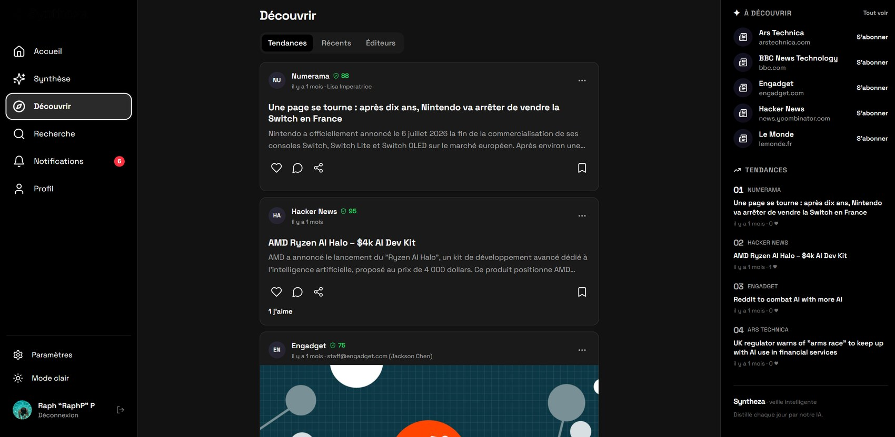
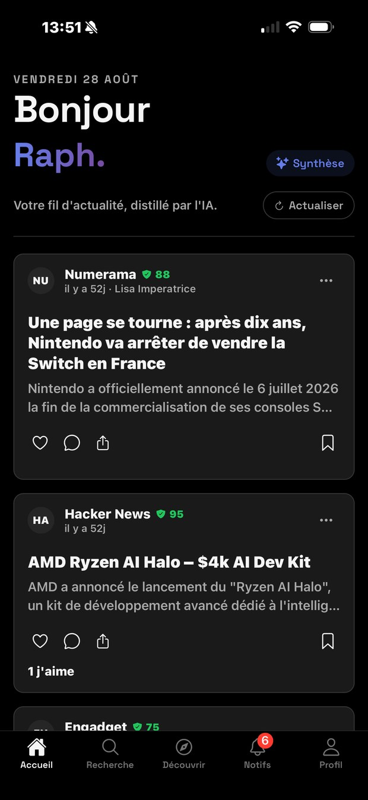
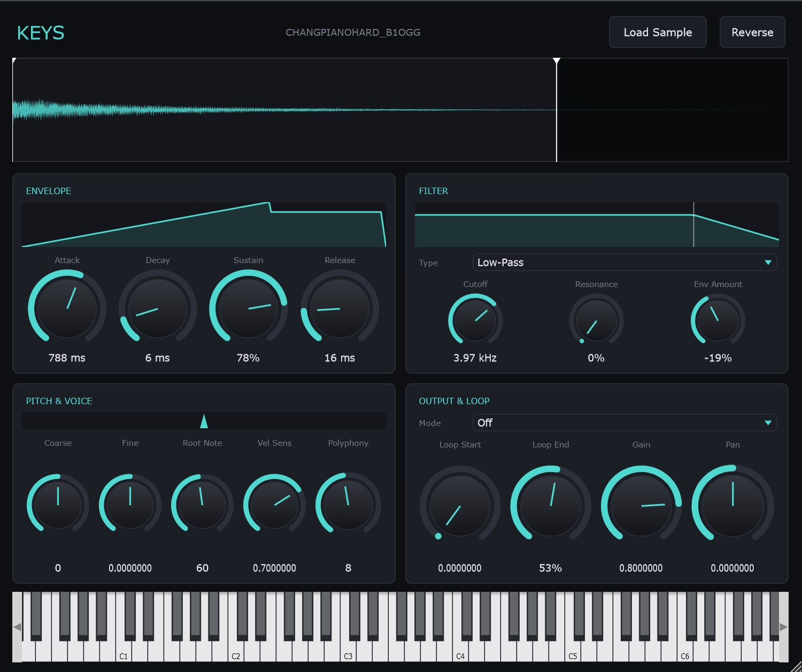
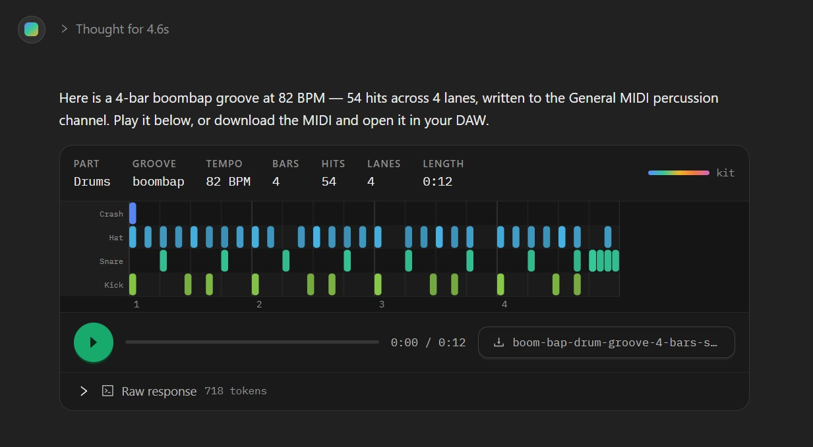
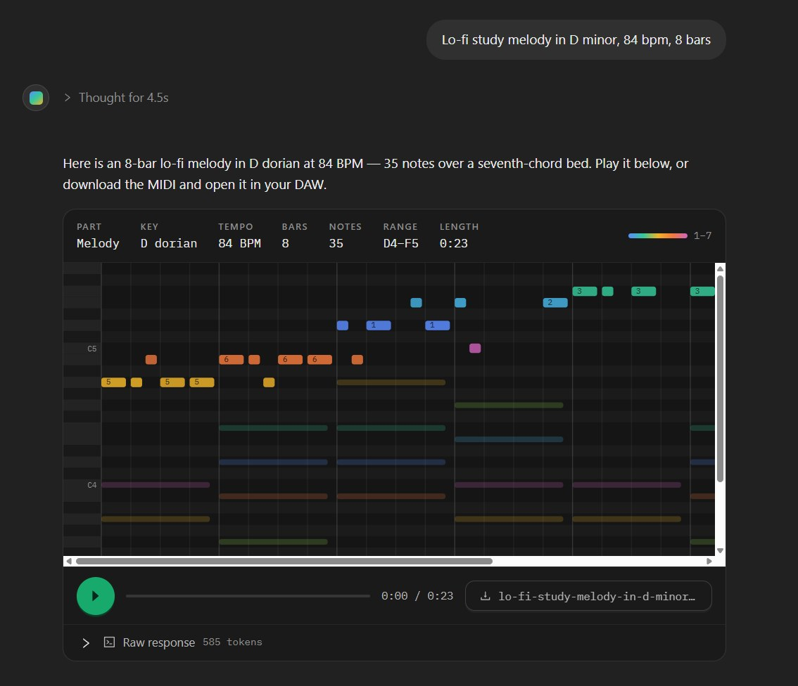

AI internship, end of studies · from March 2027
I am looking for an end-of-studies internship in AI — the kind where I add something to the technology rather than only consume it. Calling an API is the easy part; the interface on top I can already build. I want the engineering in between. Five projects follow, four of them used by people who are not me.
I am looking for an end-of-studies internship in AI. The kind where I add something to the technology rather than only consume it.
Open to offers
AI internship, end of studies · 4–6 months
Starting March 2027
Strategic watch, against information overload
{{link_syntheza}}
Web client · Discover feed, publishers, trending and Trust Factor scores
A one-year entrepreneurial project run by three Epitech students working from three different countries. Syntheza ingests RSS at scale, deduplicates what it finds, and returns a daily synthesis instead of another feed. I lead the web client — the interface, the design system and the React component layer.
The green shield on every source is the Trust Factor: a corroboration score, so a claim made once does not read like one confirmed by five.
The team ran a field study of 20 professionals before writing code — 85% reported daily overload, 70% lose one to two hours a day sorting noise. That study, not a hunch, set the scope.

Mobile · Expo
Game-asset generation that never leaves the machine
{{link_forge}}Generating one good image with an AI tool is easy. Generating forty that look like they came from the same game is the actual problem — and it is a software engineering problem, not a prompting one.
Forge answers it as a service: a FastAPI backend driving SDXL on a local GPU, so a game pipeline can call it like any other endpoint. Behind it are recipes — presets that own the style, resolution, sampler and post-processing for a category of asset. The user supplies only the subject, so two characters generated six months apart go through an identical pipeline and match.
It runs entirely on your own hardware. No subscription, no account, and no image ever leaves the machine. Nine-slice UI panels are not trusted to come out symmetrical — the tool keeps one corner, mirrors it, and measures the border thickness by scanning inward until the colour goes flat.
Four things it took generating images to find
The text encoder only reads English. French subjects failed 6 out of 6; English succeeded 6 out of 6. Fixed with a local translation model.
The 75-token prompt budget overflows silently — the end is dropped with no error. A test now stops any recipe exceeding it.
Style strength has to vary by asset type: pushed hard, icons collapse into unreadable clusters at their real 48 px display size.
On 8 GB of VRAM an extra refiner pass took generation from 21 seconds to over 9 minutes. Disabled by default, with the measured figure.
A VST3 sampler, drawn by hand
{{link_keys}}
Keys · sample loaded, live ADSR curve and filter response
A single-sample VST3 instrument built on JUCE. It pitch-shifts one sample across the keyboard through an ADSR envelope, a three-mode filter whose cutoff can follow that envelope, and forward or ping-pong looping across 1 to 16 voices.
The interface uses no GUI library at all — every knob, curve and meter above is drawn with the JUCE Graphics API. The envelope view shows the ADSR shape with a live line tracking the playing voice; the filter graph draws the real frequency response with separate markers for the static and the envelope-modulated cutoff. The waveform is held as a min/max envelope rather than raw samples, so it stays sharp at any zoom, and the trim and loop markers are dragged directly on it.
Describe a part, get a MIDI file
{{link_keysgpt}}
Generated 4-bar boombap groove · 54 hits, four lanes, playable in the browser
You describe a part — a mood, a key, a tempo, a length — and get a piano roll you can hear and a MIDI file you can keep. It writes melodies, chord progressions, counter-melodies and drum grooves, and the part type is inferred from the prompt rather than picked from a menu.
It runs against the OpenAI API — gpt-4o-mini above — and the part is playable in the browser before anything is downloaded, so you hear it before deciding whether to keep it.

8-bar melody · D dorian, 35 notes
Casino floor management, where a mistake takes a machine offline
{{link_appolonia}}Appolonia builds the systems casinos use to run their gaming floors. I worked on KAMA, the manager operators use to configure and deploy to Kalypse Touch terminals — the screens embedded in slot machines.
My responsibilities went from a dashboard widget, to redesigning whole modules, to building features from nothing.
Skiing and taekwondo. Motorsport. Music production in a DAW — which is where the sampler came from. Travel, most recently a year of it in Beijing.
Full driving licence.
Open to offers
AI internship, end of studies · 4–6 months
Starting March 2027
Get in touch
Let’s build
something solid